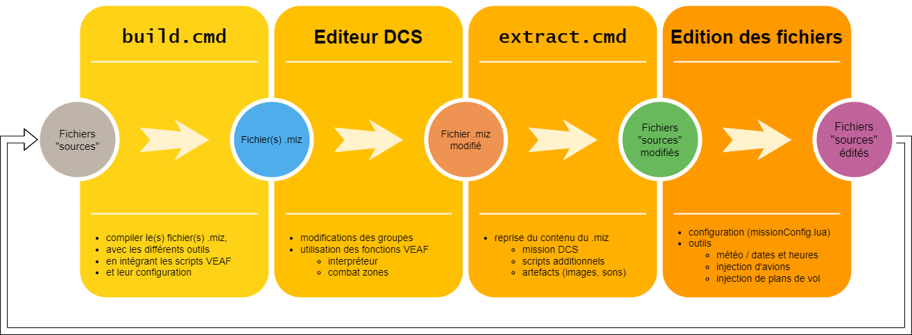
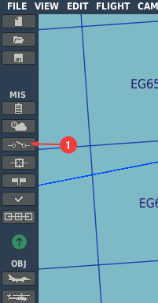
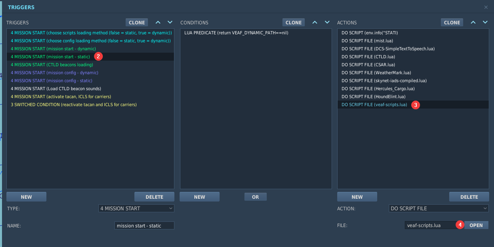
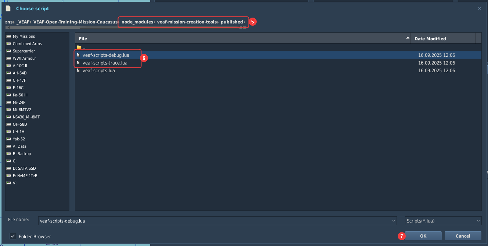

Rôle: créateur de mission¶
Navigation: Site de documentation VEAF - page principale
🚧 TRAVAUX EN COURS 🚧
La documentation est en train d'être retravaillée, morceau par morceau. En attendant, vous pouvez consulter l'ancienne documentation.
Table des matières¶
Principes¶
Une mission qui intègre les scripts VEAF offre des dizaines de fonctionnalités au mission maker, qu'il peut exploiter pour dynamiser son scénario.
De même, de nombreux outils sont à sa disposition pour créer du contenu ou automatiser des processus répétitifs.
Mise en place d'un répertoire de travail¶
Les mission VEAF sont gérées dans un cycle de production simple mais indispensable.
Tout ce qui est nécessaire à la génération du fichier .miz que DCS va pouvoir lire se trouve dans le répertoire de travail.
Il est composé de :
- scripts
.cmdqui permettent de gérer la mission. - fichiers "sources" qui rassemblent toutes les informations nécessaires à la mission.
- fichier
package.jsonqui décrit la version des scripts VEAF utilisée par la mission.
Outils et prérequis¶
Pour pouvoir utiliser les scripts .cmd, il faut installer certains prérequis.
Le mieux est de suivre ces instructions.
Vous pouvez aussi regarder cette vidéo.
Installation¶
La manière la plus simple de mettre en place un répertoire de travail VEAF est d'utiliser le convertisseur de mission existante qui transforme une mission existante (un simple fichier .miz). Il est également capable de générer un répertoire de travail vierge.
Vous pouvez également télécharger un répertoire de travail existant, par exemple sur le GitHub de la VEAF.
Cycle de production¶
Les fichiers "sources" sont compilés et utilisés pour générer le(s) fichier(s) de mission .miz par le script build.cmd. Des variantes de ce script permettent de générer des fichiers de mission avec des paramètres spécifiques (voir commandes avancées).
Une fois éditée dans l'éditeur de mission de DCS, qui sauve les modifications dans le (un des) fichier(s) -miz, il faut rappatrier ces éditions dans les fichiers "sources". C'est le rôle du script extract.cmd. Lui aussi a des variantes (voir commandes avancées).
C'est ainsi qu'on peut travailler en circuit fermé sur une mission VEAF.

Remplacement du script VEAF de production par une version avec du logging¶
Parfois, les créateurs de mission ont besoin de voir ce qui se passe dans les scripts VEAF lorsqu'ils essaient de corriger leurs missions.
Depuis cette version, le script veaf-script.lua est complété par deux nouvelles versions :
veaf-script-debug.lua: force les logs de tous les modules VEAF en DEBUGveaf-script-trace.lua: force les logs de tous les modules VEAF en TRACE
Pour remplacer le fichier veaf-script.lua de production par l'une des versions de journalisation dans la mission, il suffit de le sélectionner dans le trigger de chargement.
Tous les scripts sont disponibles dans le dossier .\node_modules\veaf-mission-creation-tools\published\.
Étape 1 : ouvrez les triggers dans la mission.

Étape 2 : changez le script dans le trigger mission start - static.

Étape 3 : sélectionnez le script souhaité dans le dossier .\node_modules\veaf-mission-creation-tools\published\.

Étape 4 : enregistrez votre mission, puis ouvrez le fichier dcs.log dans le sous-dossier logs de votre dossier DCS Saved Games. Je recommande d'utiliser un programme "tail" tel que Klogg.
J'ai joint une configuration de surlignage pour Klogg que vous pouvez importer dans Klogg si vous le souhaitez.
Commandes avancées¶
TBD
Outils¶
Injecteur de groupes d'aéronefs¶
TBD
Injecteur de plans de vols¶
L'outil Injecteur de plans de vols permet de gérer de manière facile et centralisée les plans de vol (waypoints) des différents appareils de vos missions.
Ainsi, vous pourrez facilement ajouter ou modifier un point partagé par tous les vols, ou ajouter un nouveau vol sans avoir besoin de lui assigner tous les points partagés. En particulier, c'est très utile pour le bullseye, et autres points de report centralisés.
Grâce à cet outil, il devient très aisé de maintenir un ensemble de points de report commun pour chaque coalition de votre mission, et de le copier d'une mission à l'autre : si vous commencez une nouvelle mission sur Caucase, il suffit de reprendre le fichier de configuration de votre précédente mission sur Caucase, et hop tous les avions ont les bons waypoints !
Injecteur de presets radio¶
L'outil Injecteur de presets radio permet de gérer de manière facile et centralisée les presets radio (canaux pré-réglés) des différents appareils de vos missions.
Ainsi, vous avez un seul endroit où changer une fréquence pour un canal, et tous les appareils sont mis à jour automatiquement; pas de risque d'oublier de changer la fréquence pour un ou l'autre appareil parmi les 500 de votre mission.
Grâce à cet outil, il devient très aisé de maintenir un plan de fréquence commun pour chaque coalition de votre mission, et de le copier d'une mission à l'autre : si vous commencez une nouvelle mission sur Caucase, il suffit de reprendre le fichier de configuration de votre précédente mission sur Caucase, et hop tous les avions ont les bons presets !
Génération de versions (date / heure / météo)¶
TBD
Modules¶
Spawn et raccourcis¶
TBD
AirWaves¶
Le module AirWaves permet de créer facilement des zones d'entrainement, sur le modèle de la QRA (en tout cas pour ce qui est des paramètres), dans lesquelles les joueurs font face à des vagues d'ennemis IA successives qu'ils doivent vaincre les unes après les autres.
A la base, les zones AirWaves font apparaître des groupes aériens, mais il est tout à fait possible de faire aussi apparaître des unités au sol ou des navires (le module supporte toutes les commandes VEAF gérées par le module Shortcuts). Le principe reste le même: vaincre toutes les vagues les unes après les autres.
En cas d'échec (perte du combat contre les IA), la zone est remise à zéro et les groupes IA restants sont détruits. De cette manière, tout est prêt pour le joueur suivant.
Voir la documentation détaillée ici
QRA¶
Une QRA Quick Reaction Alert est un vol d'appareils de chasse prêt à décoller pour intercepter tout appareil ou missile de croisière menaçant une zone (typiquement une base aérienne, ou une zone sensible).
Grâce à ce module, vous pourrez facilement définir une ou plusieurs zones, circulaires ou polygonales, qui déclencheront le décollage d'un ou plusieurs groupes d'interception si elles sont violées par un pilote humain.
Le but de ce qui suit est de fournir toutes les informations nécessaires pour configurer une QRA (Quick Reaction Alert) dans une mission utilisant les scripts VEAF.
Voir la documentation détaillée ici
Assets¶
TBD
Opérations aéronavales¶
TBD
Interpréteur¶
L'interpréteur de commandes VEAF est un outil très pratique qui permet de placer une unité (quelconque) dans l'éditeur de mission, et de l'utiliser pour lancer des commandes VEAF (toutes les commandes disponibles dans un marker sur la carte F10) au lancement de la mission.
C'est très simple: il suffit de nommer l'unité en suivant cette nomenclature:
- le nom doit commencer par
#veafInterpreter[" - ensuite on met la commande à exécuter
- puis on ferme les guillemets et les brackets
"] - on peut ensuite mettre tout ce qu'on veut derrière (pour éviter d'avoir plusieurs unités qui ont le même nom, je conseille d'ajouter un suffixe numérique)
Voilà, rien de compliqué.
Exemples:
- un JTAC: je place une jeep (Humvee) sur la carte, et je l'appelle
#veafInterpreter["-jtac, code 1511"] - trois groupes de combat blindés:
- je place un char (T90) sur la carte et je l'appelle
#veafInterpreter["-armor, armor 5, defense 3"] #001 - je place un char (T90) sur la carte et je l'appelle
#veafInterpreter["-armor, armor 5, defense 3"] #002 - je place un char (T90) sur la carte et je l'appelle
#veafInterpreter["-armor, armor 5, defense 3"] #003 - un site SA11: je place un lanceur SA-11 sur la carte, et je l'appelle
#veafInterpreter["-sa11"] - un convoi qui fait des allers et retours vers un point arbitraire:
- je place une balise (pneu, drapeau) sur la carte et je l'appelle
#veafInterpreter["-point bp_delta"] - je place un camion sur la carte et je l'appelle
#veafInterpreter["-convoy, defense 2, size 10, armor 3, dest bp_delta, patrol"] - une frappe d'artillerie sur une zone: je place un truc quelconque (pneu, drapeau) sur la carte et je l'appelle
#veafInterpreter["-shell, multiplier 10"]; ça va péter de partout !
Attention - c'est le nom de l'unité qui doit contenir la commande VEAF !!!
Mes conseils:
- utiliser une unité adaptée (comme un lanceur SA-11 pour la commande
-sa11) pour permettre de s'y retrouver dans l'éditeur de mission (icone, range rings, etc.) - exploiter cette fonctionnalité pour facilement placer des défenses sur les bases (
-hawkou-patriotsur les bases alliées,-sa2ou autre pour les rouges)
Combat missions (air-air)¶
TBD
Combat zones (air-sol)¶
Une Combat Zone est une zone matérialisée par une trigger zone dans l'éditeur de mission, dont on va enregistrer le contenu au démarrage de la mission, qu'on va intégralement vider (aucune unité de cette zone ne sera présente au lancement de la mission).
Une fois en jeu, dans le menu radio "Combat Zone", on pourra trouver des entrées pour interagir avec la zone de combat, en particulier:
- la déclencher: toutes les unités placées dans l'éditeur de mission sont spawnées
- la terminer: toutes les unités spawnées au déclenchement, y compris les carcasses, sont déspawnées
- obtenir des informations: les coordonnées de la zone, le nombre d'ennemis et d'alliés présents, la météo, etc.
Voir la documentation détaillée ici
FARPs et pistes en herbe¶
TBD
CTLD¶
CTLD est un module communautaire qui permet de gérer du transport de troupe et de matériel avec DCS, principalement en hélicoptère, mais aussi en avion.
Pour l'activer, éditez le fichier missionConfig.lua et assurez vous que le module est configuré ; à la base, le fichier de config par défaut injecté par le mission-converter contient
-------------------------------------------------------------------------------------------------------------------------------------------------------------
-- configure CTLD
-------------------------------------------------------------------------------------------------------------------------------------------------------------
if ctld then
-- uncomment (and adapt) the following lines to enable CTLD, its commands and its radio menu
--[[
veaf.loggers.get(veaf.Id):info("init - ctld")
function configurationCallback()
veaf.loggers.get(veaf.Id):info("configuring CTLD for %s", veaf.config.MISSION_NAME)
-- do what you have to do in CTLD before it is initialized
-- ctld.hoverPickup = false
-- ctld.slingLoad = true
end
ctld.initialize(configurationCallback)
]]
end
Il faut retirer les commentaires pour activer le module, et si besoin faire ce qui sera spécifique à la mission (c'est un peu plus avancé, merci de nous contacter); par exemple:
-------------------------------------------------------------------------------------------------------------------------------------------------------------
-- configure CTLD
-------------------------------------------------------------------------------------------------------------------------------------------------------------
if ctld then
veaf.loggers.get(veaf.Id):info("init - ctld")
function configurationCallback()
veaf.loggers.get(veaf.Id):info("configuring CTLD for %s", veaf.config.MISSION_NAME)
end
ctld.initialize(configurationCallback)
end
CSAR¶
CSAR est un module communautaire qui permet d'effectuer des missions de Combat Search And Rescue (d'où son nom) en hélicoptère et en avion.
Comme pour CTLD, pour l'activer il suffit d'éditer le fichier missionConfig.lua et de s'assurer que le module est configuré ; à la base, le fichier de config par défaut injecté par le mission-converter contient
-------------------------------------------------------------------------------------------------------------------------------------------------------------
-- configure CSAR
-------------------------------------------------------------------------------------------------------------------------------------------------------------
if csar then
-- uncomment (and adapt) the following lines to enable CSAR, its commands and its radio menu
--[[
veaf.loggers.get(veaf.Id):info("init - csar")
function configurationCallback()
veaf.loggers.get(veaf.Id):info("configuring CSAR for %s", veaf.config.MISSION_NAME)
-- do what you have to do in csar before it is initialized
-- csar.enableAllslots = false
-- csar.aircraftType = {} -- Type and limit
-- csar.aircraftType["SA342Mistral"] = 2
-- csar.aircraftType["SA342Minigun"] = 2
-- csar.aircraftType["SA342L"] = 2
-- csar.aircraftType["SA342M"] = 2
-- csar.aircraftType["UH-1H"] = 8
-- csar.aircraftType["Mi-8MT"] = 16
-- csar.useprefix = true
-- csar.csarPrefix = { "helicargo", "MEDEVAC"}
end
csar.initialize(configurationCallback)
]]
end
Il faut retirer les commentaires pour activer le module, et si besoin faire ce qui sera spécifique à la mission (c'est un peu plus avancé, merci de nous contacter); par exemple:
-------------------------------------------------------------------------------------------------------------------------------------------------------------
-- configure CSAR
-------------------------------------------------------------------------------------------------------------------------------------------------------------
if csar then
veaf.loggers.get(veaf.Id):info("init - csar")
function configurationCallback()
veaf.loggers.get(veaf.Id):info("configuring CSAR for %s", veaf.config.MISSION_NAME)
csar.enableAllslots = false
csar.aircraftType = {} -- Type and limit
csar.aircraftType["SA342Mistral"] = 2
csar.aircraftType["SA342Minigun"] = 2
csar.aircraftType["SA342L"] = 2
csar.aircraftType["SA342M"] = 2
csar.aircraftType["UH-1H"] = 8
csar.aircraftType["Mi-8MT"] = 16
end
csar.initialize(configurationCallback)
end
Hound Elint¶
TBD
Points d'intérêt¶
TBD
Menus radio¶
Le module Radio permet de gérer les menus radio des scripts VEAF.
Il permet également de créer facilement des menus pour déclencher des actions à la demande, liés ou non à des groupes d'appareils.
Voir la documentation détaillée ici
Accès à distance¶
TBD
Zone sanctuaire¶
TBD
Gestion des accès et de la sécurité¶
TBD
Skynet IADS¶
Synet-IADS est un script qui pilote les systèmes radar antiaériens afin qu'ils optimisent leur survivabilité et leur léthalité en restant éteints le plus possible. Il simule ainsi un IADS (Integrated Air Defence System) dans lequel les EWR (Early Warning Radar) scannent le ciel pour repérer et surveiller des contacts, et communiquent ces informations aux sites SAM (Surface-to-Air Missile), permettant à ceux-ci de ne s'activer que lorsqu'ils sont en capacité d'engager un contact.
Skynet-IADS change complétement la manière dont fonctionnent les défenses antiaériennes dans DCS. Il est ainsi quasi indispensable à toute mission qui comporte des radars au sol. Malheureusement, sa configuration nécéssite de mettre en place et de maintenir un script dans chaque mission, script dont la complexité augmente avec la taille de la mission. Les modules VEAF documentés ici automatisent la construction de ce script et offrent des outils pour consulter et vérifier les réseaux ainsi créés.
Voir la documentation détaillée ici
Move (déplacement de groupes d'aéronefs: tankers, afac, etc.)¶
TBD
Génération d'une mission de transport (hélico)¶
TBD
Informations météo et gestion du brouillard¶
Ce module a pour but de permettre la gestion de la météo; il offre:
- la possibilité de gérer le brouillard:
- statique
- animé (s'établit ou se dissipe sur une période donnée)
- dynamique (est géré par le système en fonction des conditions météo, de l'heure et de l'emplacement)
- l'obtention d'informations météo via le menu radio
- l'exploitation d'informations de type ATIS, concernant la base aérienne la plus proche (piste en service, etc.)
Voir la documentation détaillée ici
Contacts¶
Si vous avez besoin d'aide, ou si vous voulez suggérer quelque chose, vous pouvez :
- contacter Zip sur GitHub ou sur Discord
- aller consulter le site de la VEAF
- poster sur le forum de la VEAF
- rejoindre le Discord de la VEAF